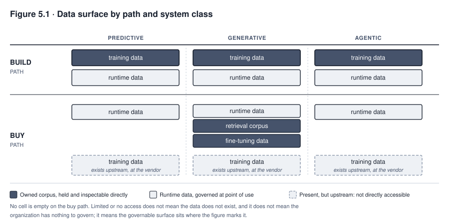
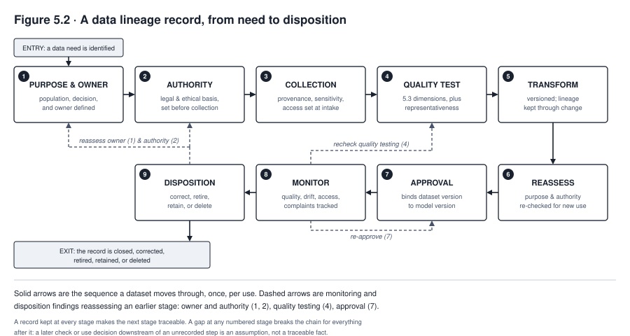
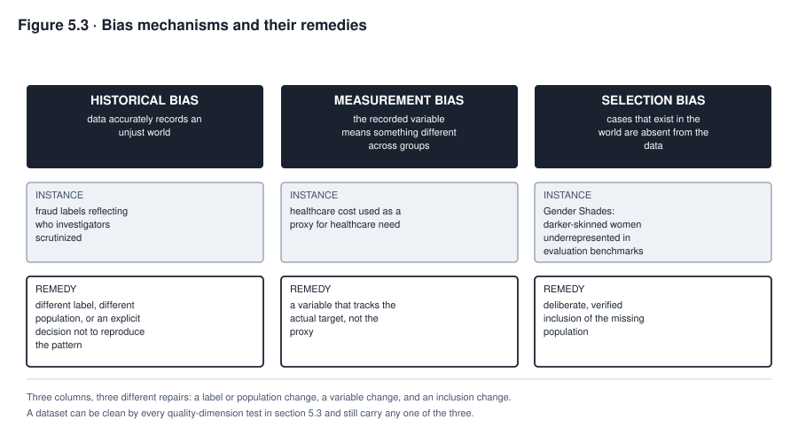

5. Data Governance for AI
MEDASSIST was accurate at the academic medical center where it was trained. Ten years of records, a large nursing staff following consistent documentation practice, and a patient population the model had effectively seen before, spread across a decade. Deployed unchanged to one of Northfield’s community hospitals, its sepsis alerts started arriving late, and sometimes not at all, for patients whose deterioration a nurse would have caught on sight. Nobody had touched the model. What had changed was the population underneath it. It was older on average, had more comorbidity, a smaller nursing staff charting on a different schedule, and lab panels ordered in a different order because the community hospital’s protocol was not the academic center’s. The model had learned the statistical signature of deterioration at one hospital and applied it, faithfully, to a population it did not describe.
Nothing about this is a story about a bad model. The model did exactly what supervised learning does; it found the pattern in the data it was given. The failure sits upstream of the model, in a question nobody asked before deployment, which is whether the data the model was trained on described the population it would be used on. That question, and the family of questions like it, is what this chapter is about, and it is the reason data governance gets its own chapter, not a section inside model development. A report built on bad data produces one bad report. A model trained on bad data can convert a pattern present in that data into parameters that shape many later outputs, so the same distortion can recur at scale even when no single runtime record is malformed. Data is, for that reason, one major source of AI risk, alongside the task definition, the model, the interface, the deployment setting, and the monitoring that would otherwise catch the recurrence.
What you will be able to do
- Identify the governable data surface for a system on the build path and on the buy path, across predictive, generative, and agentic systems
- Assess a dataset against five named quality dimensions and state what each failure produces once the data is trained on, not merely read
- Evaluate representativeness between a training population and a deployment population, and say what evidence would settle the question
- Distinguish historical bias, measurement bias, and selection bias in a described dataset, and name the different remedy each requires
- Govern a retrieval corpus and a fine-tuning set as data surfaces in their own right, not as afterthoughts of model selection
- Choose among four privacy-enhancing technologies for a stated purpose and state what each does not protect against
5.1 What data means at each path and system class
A chapter that opens with training data excludes most of its readers before the first section ends. Most organizations select a model instead of building one, and an organization on the buy path usually has no training data to govern at all. It would be a mistake to conclude from that fact that the buy path has no data governance surface. It has a different one, and naming it precisely is the first job of this chapter.
Four kinds of data recur across the systems this book follows, and a given deployment carries some subset of them depending on its path and its system class.
Training data exists on the build path in the fullest sense. The organization holds it, can inspect it, and controls what happens to it. MEDASSIST is in exactly this position, because Northfield trained the model on its own academic medical center’s records. On the buy path the data does not disappear; it moves upstream and out of reach. TALENTSCREEN sits on the buy path. Calloway licensed its hiring system, so the training data exists somewhere in the vendor’s pipeline, but Calloway has limited or no access to it and no control over it. That distinction is between a data surface that does not exist and one that exists but is not visible or governable from where the organization sits. It matters because Chapter 6 shows an organization on the buy path inheriting the developer’s training choices whether or not it can see what those choices were. Training data is the most extensively studied of the four, and sections 5.2 through 5.6 concentrate on it. But it is not the only data surface. Treating an invisible surface as an absent one produces the same result as the failure that stranded MEDASSIST’s community hospitals: a question about data that nobody asked, because nobody recognised there was data to ask about.
Fine-tuning data exists wherever an organization adapts a model it did not train from scratch, whether that model was built in-house and is being specialized, or purchased and is being adjusted to a narrower task. It is usually far smaller than a training set, sometimes a few thousand examples, and section 5.8 explains why its small size is exactly what makes it dangerous to govern casually.
Retrieval corpus data exists wherever a generative system retrieves documents to ground its output, an architecture common enough that most organizations deploying a purchased language model against their own content are governing a corpus whether or not anyone has named it that. MEDASSIST’s later documentation assistant, introduced in section 5.7, retrieves from Northfield’s clinical guidelines and prior notes. Nothing about this system was trained; the model is unchanged from what the vendor shipped. The corpus is where the organization’s own choices, and its own risk, actually live.
Runtime data exists for every system class, but it becomes structurally different once a system acts instead of only producing output. A predictive system’s runtime data is the record fed to it at inference. A generative system’s runtime data includes whatever context is assembled for it, which for a retrieval-augmented system means the corpus above plus anything else concatenated into the prompt at the moment of use. An agentic system’s runtime data additionally includes what the agent reads and writes while it works. That includes the files it opens, the records it queries, and the actions it logs. Chapter 12 develops the specific controls an agent’s runtime data requires; this chapter’s job is to establish that the surface exists and that it is a data governance question before it is anything else.
TALENTSCREEN illustrates the buy-path pattern precisely. Training data for the resume-screening model exists, because some corpus taught the model to score résumés, but Calloway cannot see it, because the vendor trained the model and has not disclosed what on. The data exists upstream, with no direct access or control on Calloway’s side. What Calloway does have direct governance authority over is the applicant data it feeds the system at inference, the résumés and application forms that constitute its runtime surface. If the vendor’s newer offering adds a retrieval component drawing on Calloway’s own hiring history, that is a corpus to govern as well. An organization that concludes it has no data to govern because it bought rather than built has misdiagnosed its situation in a way that will surface, usually badly, the first time a regulator or a plaintiff’s lawyer asks what data the system actually touches.
The pattern generalizes into a rule worth stating plainly before the chapter goes further. Identify the full data surface before governing any part of it. A governance programme that inventories training data with rigor while leaving the retrieval corpus untouched has not under-governed by a small margin. It has governed the part of the system that happened to have precedent in older data governance practice and ignored the part where new risk actually concentrates.

Read Figure 5.1 by path first, then by column. The build-path row is where training data is directly held and governed, and that is true for every system class, because something had to be trained regardless of what the system produces. The buy-path row does not show an empty training-data cell; it shows one marked existing upstream, with limited or no direct access or control, which is the distinction organizations most often collapse into a false absence. A purchased predictive model still has runtime data the deploying organization fully governs. A purchased generative model typically adds a retrieval corpus and may add a fine-tuning set, both under direct organizational control even though the base model’s training data is not. A purchased agentic system adds runtime data of its own kind, what the agent reads and writes while it works. TALENTSCREEN sits in the buy-path, predictive-leaning-agentic cells at once, since Calloway’s vendor supplies both screening and, later, autonomous scheduling. No cell in this figure is a control. It is a map of where a control would have something to act on, which the rest of the chapter fills in one surface at a time.
5.2 Why data problems compound in machine learning
Each surface just named can carry an error, and an error behaves differently once it trains a model than it does sitting in an ordinary program. Ordinary software processes are wrong in the ordinary way software is wrong. A bad record produces one bad output, visible at the moment it occurs, correctable by fixing that record. A spreadsheet with an error in one cell has an error in one cell.
A trained model does not fail this way, and the difference is worth being precise about because it explains why data governance for AI cannot simply borrow data governance for conventional systems. When a model is trained on data containing a systematic pattern, whether that pattern is a genuine signal or an artifact of how the data was collected, the model extracts the pattern as a general rule and applies it to every case it subsequently sees. A single mislabeled transaction in a fraud dataset is a data-entry error. A dataset in which one demographic group was historically investigated more closely, so that fraud “found” tracks who was looked at rather than who offended, teaches the model an investigation pattern. The model will then apply that pattern, confidently and at scale, to every future transaction from that group. The error has moved from one record to a pattern the model has generalized into its parameters, which is what makes a data problem in a trained model categorically harder to contain than a data problem in a single report.
This is also why data problems in AI resist the debugging instinct conventional software has trained practitioners to expect. When conventional software misbehaves, a developer traces execution and finds the line that is wrong. A model’s behaviour is an interaction across millions of parameters shaped by every example it saw, and there is no line to point at. The data problem is discoverable, but only by examining the data and the outcomes it produced, not by reading code. Sections 5.3 through 5.6 develop the specific tools for that examination, named quality dimensions, provenance discipline, representativeness assessment, and the three bias mechanisms that most often turn a dataset’s history into a model’s rule.
5.3 Quality dimensions
“Bad data” is not a diagnosis a governance programme can act on. Five named dimensions turn the complaint into something a team can test for, and each produces a specific and different failure once the data is trained on, not merely stored. Treat the five as a minimum diagnostic set for this chapter’s purposes, not as a complete definition of data quality. Operational quality frameworks also name uniqueness, integrity, relevance, traceability, and fitness for purpose. Representativeness, privacy, and lawful use are separate questions again, each treated on its own elsewhere in this chapter, and none of them should be collapsed into a field-level quality check. An organization extends the set to match its decision and domain instead of treating these five as the whole of the question.
Five tests are useless without something to run them against, and a governance function facing a four-hundred-column clinical record or a sixty-field application form cannot test everything. Nor should it. The fields that matter are the ones the model relies on, and there is a way to find them that does not require reading the whole dataset.
Work backwards from the decision rather than forwards from the schema. Start with the outcome the system produces and the decision someone takes on it, then ask which inputs carry that decision. Four passes narrow a dataset to a list worth testing.
First, the fields the model weights most heavily. On the build path these are available directly, from feature importance or from the model’s own coefficients. On the buy path they are usually not, and that absence is itself the first finding. An organization that cannot say which inputs drive the score cannot say which data quality failures would matter, and should record the question as asked and unanswered rather than skip it.
Second, the fields that encode a protected or proxy characteristic, whether or not the model weights them heavily. A postcode carries income and ethnicity; an employment gap carries caregiving and illness; a school name carries several things at once. These earn a quality test because an error in them lands unevenly across the population rather than evenly across the dataset.
Third, the fields that were transformed on the way in. Every derived, imputed, parsed, or bucketed field is a place where a rule somebody wrote is standing in for a fact somebody observed. A resume parser deciding what counts as an employment gap is making a determination, not reading one, and its errors are systematic where raw-field errors are usually random.
Fourth, the fields whose meaning depends on where or when they were recorded. A vital sign taken on a different cadence, a diagnosis code entered under a superseded coding standard, a form field whose options changed in 2022. These look consistent to a schema check and are not consistent in fact, which is the failure the consistency dimension below exists to catch and the one a column-level audit will miss entirely.
A field reached by more than one pass is where to start. MEDASSIST’s vital-sign cadence arrives by the first pass and the fourth; FAIRLEND’s thin-file indicator by the first, second, and third. The list this produces is usually a dozen fields rather than four hundred, and a governance function that tests those twelve against the five dimensions below has done more than one that samples the whole set once.
Accuracy asks whether a recorded value matches the true value it claims to describe. An accuracy failure in AI is not always the mislabeled outlier a spreadsheet audit would catch. It also includes labels that were correct when recorded and wrong by the time they matter, such as a diagnosis code entered before a later correction that never propagated back. A model trained on systematically inaccurate labels learns to predict the inaccuracy, and it will do so with the same confidence it would show predicting the truth, because nothing in the training signal distinguishes the two.
Completeness is a question of whether the data that should exist actually does. Missing data is rarely missing at random, and the pattern of absence often carries the signal a naive analysis would miss entirely. A lending dataset can disproportionately decline thin-file applicants, people with little credit history, before they reach the stage where outcome data is recorded. Training on that dataset produces a model that has never seen what a thin-file applicant who succeeds looks like, because that case was systematically prevented from entering the dataset. FAIRLEND’s data science team should be asking not only whether fields are populated but whether entire categories of applicant are underrepresented because of exactly the kind of decision the model is now being trained to make.
Consistency concerns whether the same fact is recorded the same way across the dataset. A field populated by manual entry across six community hospitals, each with its own charting convention, produces a dataset that looks complete and accurate by any single-hospital check while encoding six different measurement practices as though they were one. MEDASSIST’s later failure at the community hospitals had a consistency component alongside its representativeness problem. Vital signs were entered on a different cadence, at a different level of granularity, by staff following a different protocol, none of which is visible in an accuracy audit run against any single hospital’s own records.
Timeliness is a question of whether the data reflects the world as it currently is, not as it was when collected. A model is a photograph of the patterns present at training time, and the world it operates on keeps moving after the photograph is taken. This is the mechanism behind performance decay discussed in Chapter 1. Fraud techniques evolve, clinical practice guidelines update, hiring markets shift, and a model trained on last year’s patterns degrades against this year’s world without anyone having changed a line of code. Timeliness is therefore not a one-time check at training but a standing question that Chapter 9’s monitoring discipline exists to keep answering.
Validity asks whether a value falls within the range and format the field’s definition permits, and whether the definition itself still matches what the field is being used to mean. A validity failure that quality checks miss most often is not the malformed entry, which automated checks catch easily. It is the field being repurposed, an “other” category absorbing cases nobody built a proper category for. That category quietly becomes a bucket that a model reads as one coherent thing when it is actually several unrelated ones.
None of these five dimensions is checked by reading the data once. Each requires a specific test, run against the specific way the data will be used. A governance function that has not named which of the five it checked, and how, has not actually checked data quality, regardless of how much time it spent looking at the data. Record quality, established this way, is still a narrower question than dataset coverage, provenance, lawful use, and fitness for purpose, each of which can fail even when every field passes every test in this section.
5.4 Provenance and lineage
Knowing that a dataset is currently accurate, complete, consistent, timely, and valid answers a narrower question than governance needs. It says nothing about where the data came from, what was done to it, or what permission existed for each of those things, and each of those omissions has produced documented failures on its own.
Provenance and lineage are not simply recorded after the fact; the sequence in which they are established matters. Legal, ethical, and contractual authority for a given use has to be settled before collection or receipt, not checked afterward as a final gate, because a purpose settled after data has already been gathered cannot retroactively justify the gathering. GDPR’s principles of lawfulness, purpose limitation, and minimization operate as conditions on processing from the outset, not as a compliance step appended once a dataset already exists. The four elements below are presented in the order a governance function tends to encounter them when examining a dataset already in use, but authority is the one that has to be settled first in time, not last.
For a high-risk system placed on the EU market, much of this section’s discipline is a legal requirement rather than good practice. Article 10 of the EU AI Act requires that training, validation, and testing datasets be relevant, sufficiently representative, and to the best extent possible free of errors and complete in view of the intended purpose. It further requires that datasets take into account the characteristics particular to the specific geographical, contextual, behavioural, or functional setting in which the system is intended to be used, which is the representativeness question of section 5.5 stated as law. Two scope limits matter and are the part most summaries drop. Article 10 binds the provider of the high-risk system, not the deployer, so an organization in Calloway’s position does not carry it; the deployer’s corresponding duty sits in Article 26(4) and is weaker, extending only to input data the deployer controls and requiring that data be relevant and sufficiently representative, with no free-of-errors or completeness standard attached. And where a high-risk system is developed without techniques involving the training of AI models, the dataset requirements apply only to the testing data.
Measuring composition raises an obstacle worth naming rather than leaving to the reader. Demographic composition is generally special-category personal data under GDPR Article 9, whose processing is prohibited unless a condition in Article 9(2) applies. The AI Act supplies a targeted permission in Article 4a, introduced by Regulation (EU) 2026/1744 and in force since July 2026, which allows processing of special categories where strictly necessary for bias detection and correction, subject to conditions including that no other data would serve, that re-use is technically limited, that access is restricted, and that the data is deleted once the bias has been corrected. The permission now reaches deployers and providers of systems outside the high-risk category, not only providers of high-risk ones. It is a permission and not a duty: it does not oblige anyone to conduct bias detection. An organization relying on it should document the strict-necessity assessment and the safeguards, because both are conditions on the permission rather than assumptions behind it. Readers working from older material should note that this basis previously sat in Article 10(5), which the same regulation deleted.
Source is where the data originated, and it is worth documenting for a reason less obvious than provenance for its own sake. The source determines what the data can be assumed to mean. Data collected for one purpose carries the assumptions of that purpose invisibly into any other use. MEDASSIST’s training records were collected to support clinical care and billing, not to train a predictive model, and every field in them reflects choices made for those purposes. Which vitals get charted how often, which findings get a structured field versus a free-text note, and which patients get the more thorough workup because a physician suspected something, are all choices the model will never see documented anywhere.
Collection circumstances matter because how data was gathered shapes what gaps and skews it carries. Data collected through a voluntary survey differs systematically from data collected through mandatory intake, because the population that chooses to respond is not the population that is required to. A retrieval corpus assembled by whichever documents happened to be digitized first differs from one assembled by deliberate coverage of every clinical guideline the organization uses. That difference is invisible in the corpus itself; it is visible only in the record of how the corpus was built.
Transformations are every operation performed on data between collection and use, and each one is a place where meaning can silently change. This is where a common data-cleaning instinct becomes a governance risk instead of a governance improvement. Cleaning that removes outliers as noise removes legitimate rare cases along with genuine errors, and a rare case removed from training data is a case the model will not later recognize, however important recognizing it turns out to be. A governance function that cannot answer what was removed from a dataset and why cannot evaluate whether the removal improved the data or simply deleted the hard cases.
Permissions are the legal, ethical, and contractual authority for each use the data is put to, and Chapter 2’s treatment of purpose limitation applies here with particular force. Consent is one possible basis for that authority, not the only one; applicable law can permit or restrict a given use through several lawful bases, through statutory duties, and through sector-specific rules. Which of those routes governs a particular use depends on jurisdiction and context. What is constant across all of them is that authority for the new use has to be established, not assumed. Consent obtained to provide a clinical service does not automatically extend to training a predictive model on the resulting records. An organization that assumes it does has made a purpose-limitation error with a compliance consequence, not merely a documentation gap, regardless of which basis it believed it was relying on.

Read Figure 5.2 as a nine-stage sequence, not five independent boxes and not a single straight line. Authority is checked second, immediately after purpose and ownership are named and before any collection happens, exactly reversing the order a governance function tends to fall into when it examines a dataset already in use rather than designing the intake for one not yet collected. Each stage still supplies the record the next stage needs to be trustworthy; a transformation cannot be evaluated without knowing the source it started from, and a use decision at approval is meaningless without knowing what authority was actually established for it. MEDASSIST’s training data has a strong record at collection, since Northfield’s own clinical systems logged where it came from and how. Its record is weaker at transformation, since the specific cleaning steps applied before training were not retained in a form anyone could later consult. A gap kept at any numbered stage breaks the chain for everything after it, whatever the quality of the stages that came before it.
Figure 5.2’s two dashed feedback arrows are its second argument, not a decoration on the first. Disposition, the point at which a dataset is corrected, retired, retained, or deleted, reassesses the same owner and authority decision made at stages one and two, because a disposition trigger is frequently evidence that the original purpose or authority no longer holds. Monitoring, running continuously rather than once, rechecks quality testing and forces the dataset back through approval when what it finds warrants it. A lineage record that only ever moves forward cannot represent a dataset an organization keeps using for years; the feedback arrows in Figure 5.2 are what make it a governed record instead of a one-time intake form.
The discipline that ties source, collection circumstances, transformations, and permissions together is lineage. Lineage is a traceable record of every step data took from its origin to its use in a model, sufficient that a later question about any field can be answered by consulting the record instead of guessing. Lineage is what makes the other three dimensions auditable rather than merely asserted, and its absence is why so many organizations, asked what their training data actually contains, can describe its schema but not its history.
5.5 Representativeness
Representativeness asks a single, deceptively simple question. Does the population a model was trained on resemble the population it will be used on? MEDASSIST answers the question badly, and working the case in full shows why the question is harder to answer well than it looks.
The academic medical center where the model was trained differs from Northfield’s community hospitals along several dimensions at once, and the dimensions interact instead of adding up independently. The patient population differs. An academic center draws a case mix skewed toward more complex, often more severe presentations, referred precisely because the originating facility could not manage them, while a community hospital sees a broader, generally less acute population managing its own primary care. Equipment differs too. The academic center’s monitoring infrastructure captures vitals on a tighter cadence with lower missingness. A community hospital’s older equipment and thinner staffing produce a data stream with more gaps and coarser granularity, feeding the model inputs of a quality it was never trained to expect. Documentation practice differs, in ways sections 5.3 and 5.4 already established are their own quality and provenance dimensions, compounding the population gap instead of merely coexisting with it.
A model that is excellent by every measure computed on its academic-center test set carries none of that excellence automatically to a community hospital, because the test set was drawn from the same population as the training set. Testing a model against a population it was trained on cannot detect a representativeness problem by construction. This is a distinct failure from the fairness testing Chapter 7 addresses, which asks whether a model performs consistently across groups within a single deployment population. Representativeness asks the prior question, whether the deployment population is one the model has any evidence about at all.
Settling a representativeness question requires evidence that goes beyond eyeballing summary statistics. A rigorous comparison specifies the dimensions that matter for the task, found the same way section 5.3 found the fields worth testing, by working back from the decision to the inputs that carry it, in MEDASSIST’s case things like age distribution, comorbidity burden, admitting diagnosis mix, and the specific vital-sign collection cadence and completeness the model was trained to expect. It then tests whether the deployment population’s distribution on those dimensions falls within a range the training data covered with enough density to support reliable prediction. A population that differs on a dimension the model never learned to use is a smaller problem than a population that differs on a dimension the model relies on heavily. The assessment has to be specific to the model’s actual behaviour, not generic to the dataset.
What follows from an unfavourable answer is not necessarily “do not deploy.” It is a decision, made by someone accountable for it. The options available depend on which path the organization is on. On the build path they include retraining on data from the new population, restricting the model’s use to the subset of cases where the populations do overlap, monitoring the new population closely enough to catch degradation early, or declining to deploy. On the buy path the first two are generally unavailable, because the organization controls neither the training data nor the model’s scope. What remains is contractual: requiring the vendor to disclose the training population’s composition, requiring evidence of validation on a population resembling the deployment one, negotiating the right to commission independent evaluation, restricting deployment to cases the organization can itself confirm are in scope, intensified local monitoring, and declining to deploy. An organization that discovers at this point that its contract gives it none of these has found the real finding, and it belongs in the record whether or not the deployment proceeds. What is not an acceptable answer is deploying without having asked the question, which is what happened to Northfield’s community hospitals and what Chapter 9 will show the organization discovering the hard way.
5.6 Bias mechanisms
A population can match on every dimension section 5.5 measures and still teach a model something unjust. “The data was biased” names a symptom without pointing at a cause, and different causes require different remedies. Three mechanisms recur often enough in documented failures to be worth learning separately, because a fix aimed at the wrong one does not help and can create the appearance of due diligence without the substance of it.
Historical bias exists when the data accurately records a world that was itself unjust, so that a model trained on it learns and then perpetuates a pattern of past treatment. The mechanism does not require any error in the data at all. Chapter 1’s fraud-detection example carries it. If investigators historically scrutinized some customers more closely than others, the resulting labels of “fraud found” accurately reflect what those investigators found, and a model trained on those labels learns the investigation pattern precisely because the data correctly recorded it. The remedy for historical bias is not a data-quality fix, because there is no error to fix. It requires either a different label that does not encode the historical practice or a different population to train on. Alternatively, it requires a decision, made explicitly and by someone accountable for it, that the historical pattern should not be reproduced going forward regardless of what the data shows.
Measurement bias occurs when the variable actually recorded means something different across groups than the variable the model is meant to be predicting, so that an apparently neutral proxy carries a hidden distortion. The healthcare cost-proxy algorithm from Chapter 1 is the precise case. The model predicted healthcare cost as a proxy for healthcare need. Cost is a reasonable-sounding measure of need, but it is nonetheless a bad one, because unequal access to care means less money is spent on patients facing more barriers to it, not on patients who are healthier. The variable “cost” does not mean the same thing across a population with unequal access; it means “resources actually consumed,” which tracks access as much as it tracks need. The model, reading lower spending as lower need, worked exactly as designed, and no variable in the dataset needed to name race for the distortion to reproduce it. The remedy for measurement bias is finding or constructing a variable that tracks the actual target more directly, or, where no such variable is available, treating the model’s output as evidence about the proxy, not the target it was meant to stand in for.
Selection bias exists when cases are systematically absent from the data, so that the model never learns from a population that exists in the world but not in the training set. The Gender Shades study of commercial facial analysis systems, published by Joy Buolamwini and Timnit Gebru in 2018, demonstrates the mechanism with unusual clarity. The study is worth reporting precisely, because it is routinely cited for a stronger claim than it actually made. The researchers evaluated three commercial gender-classification systems on an intersectional basis and found error rates for lighter-skinned men of 0.0 percent at Microsoft, 0.3 percent at IBM, and 0.8 percent at Face++, against error rates for darker-skinned women of 20.8 percent at Microsoft, 34.5 percent at Face++, and 34.7 percent at IBM. These are subgroup rates, not aggregate ones, and that is the methodological point. The paper’s argument is that an aggregate accuracy figure conceals disparities of exactly this size. The study documented that disparity; it did not disclose the vendors’ training data, so it could not prove by itself that a particular training composition caused the result. What the paper did show directly is that prominent public face benchmarks were themselves skewed. Those benchmarks are used to evaluate commercial systems, not necessarily to train them, which is why the finding bears on evaluation populations as much as on training ones. The paper audited two of them. IJB-A was 79.6 percent lighter-skinned and 75.4 percent male. Adience was 86.2 percent lighter-skinned and close to balanced by sex. A dataset can be skewed severely on one axis while looking acceptable on another, which is why composition has to be measured per dimension rather than summarised in a single figure. That finding illustrates the mechanism this section is teaching. Dataset composition has to be measured, not assumed, because a skew invisible to a schema check can still be large enough to produce a training population, or an evaluation population, that does not resemble the population a system will actually encounter. The remedy for selection bias is deliberate, measured inclusion of the missing population, verified by checking the resulting composition instead of taking a broadened collection effort’s success on faith. What IBM did next illustrates both the remedy and its limits. In January 2019 IBM released Diversity in Faces, one million facial images annotated along ten coding schemes and drawn from the YFCC-100M Creative Commons collection, described by IBM as offering broader coverage than prior datasets rather than as balanced in any absolute sense. It was an annotation resource for measuring composition, not a training set for a replacement classifier. Within six weeks it drew sustained criticism, and later litigation, because the underlying images had been gathered without the subjects’ consent. That is a provenance failure of exactly the kind section 5.4 requires be settled before collection rather than after, and it is worth sitting with: the remedy for one fairness problem created a second one.
The three mechanisms are not mutually exclusive within a single dataset. MEDASSIST’s community hospital gap likely involves more than one at once, a selection component, since the training data was drawn entirely from a population the community hospitals do not match, layered onto a measurement component in whatever vital-sign fields are recorded differently across sites. Diagnosing which mechanism, or which combination, is operating in a specific dataset is analytical work that cannot be shortcut. The diagnosis determines whether the fix is a different label, a different variable, or a different population, three different pieces of work that a single word like “bias” obscures rather than clarifies.

Read Figure 5.3 as three columns, not one continuum. Historical bias sits under a data source that is not wrong, only inherited from a world that was; its remedy changes the label or the population, not the data’s accuracy. Measurement bias sits under a proxy that quietly stopped tracking its target; its remedy changes the variable. Selection bias sits under an absence the dataset cannot reveal by being read more carefully, because what is missing does not announce itself; its remedy changes who is included, verified by recomputing the composition instead of assumed from the effort spent. A team that has checked accuracy, completeness, consistency, timeliness, and validity per section 5.3 has not thereby ruled out any of the three, because all three mechanisms can produce a dataset that is clean, complete, and internally consistent by every measure section 5.3 names.
5.7 Retrieval corpus governance
A generative system that retrieves documents before answering, an architecture usually called retrieval-augmented generation, is common enough that it is now close to the default way organizations connect a purchased language model to their own content. That architecture creates a data surface that training-data governance has no vocabulary for, because nothing about it is trained. The model is exactly what the vendor shipped. What changes between deployments is the corpus, and the corpus is where an organization’s own choices, and its own exposure, actually sit.
Three questions govern a corpus, and a deployment that has not answered all three has not governed it regardless of how carefully the model itself was selected.
What enters the corpus is the first, and it is a curation decision with consequences that a governance function should treat with the seriousness Chapter 2’s discussion of purpose limitation and data minimization would apply to any other collection of personal or sensitive material. A corpus assembled by pointing a retrieval system at an entire shared drive inherits everything on that drive, including documents nobody intended to make available to a system that will surface their contents in response to a query nobody anticipated.
Who may see what is the second, and it is the question where a specific, well-documented failure recurs across deployments, permission inheritance. A retrieval system that indexes documents without preserving the access controls that governed those documents when a person read them directly can surface material to a user who was never entitled to see it. That happens because retrieval operates on the index, not on the original permission structure, unless someone has deliberately carried that structure through. Northfield’s clinical documentation assistant has to preserve exactly this distinction. A nurse’s query should retrieve from the guidelines and notes a nurse is entitled to see, not from every note in the system regardless of the unit or the patient. Chapter 11 develops the runtime dimension of this failure, where it manifests as the system’s actual behaviour. This chapter’s job is to establish that the failure originates in corpus governance, at the point where documents were indexed without their permissions, not in anything the model does at inference.
Corpus freshness is the third, and it names a failure mode specific to retrieval that training-data timeliness, discussed in section 5.3, does not fully capture. A retrieval corpus can contain a superseded clinical guideline alongside its replacement, both indexed, both retrievable, with nothing in the corpus itself indicating which one is current. The model treats retrieved text as authoritative context, not as a claim to be checked against other claims. Because of that, a stale document retrieved and injected into a generative system’s context is not merely outdated information sitting unused in storage. It becomes the basis for an answer the system delivers with the same fluency and the same absence of a truth-check that Chapter 1 established as the defining property of generative output. Corpus governance therefore requires an active retirement discipline, not merely an addition discipline, one in which superseded material is removed or explicitly marked as superseded, on a cadence that matches how fast the underlying material actually changes, and checked, not assumed.
These three questions are necessary and not sufficient. A corpus that has answered all three still needs a named owner and a full lifecycle around it. That lifecycle runs from approval of each source before it enters the corpus, through the acquisition step itself, to parsing and chunking decisions that determine what a single retrieved unit actually contains. It includes propagation of metadata and access controls through indexing, not only at the source, and a recorded embedding and index version, so a later question about why a given answer was retrieved can be traced to the index state that produced it. It also requires deliberate testing for poisoning and indirect prompt injection introduced through the corpus itself, evaluation of retrieval quality and citation behaviour, not only the model’s fluency, and monitoring in operation. Finally, it needs a deletion-synchronization path so that removing a source document actually removes it from the index rather than leaving a retrievable copy behind, and an incident-response path for the case where the corpus itself is the vector. It also needs a retirement process for the corpus or any part of it. This section’s job is to establish that the lifecycle, not only the three governing questions, is what corpus governance actually requires; what an agent or a generative system does with a retrieved document at runtime is Chapter 11’s concern.
5.8 Fine-tuning data
Fine-tuning sets are usually far smaller than training sets, sometimes a few thousand examples against a training corpus of millions, and the size difference is precisely why fine-tuning data warrants review that its modest scale tempts organizations to skip. It should not be assumed that a model’s broad behaviour is insulated from a small, targeted set. Published results show fine-tuning sets of a few hundred to a few thousand examples degrading safety behaviours, and in some cases producing behavioural shifts well outside the fine-tuning task’s own domain. Its narrow, task-specific behaviour, the register it adopts, the categories it treats as natural, the edge cases it handles confidently versus the ones it stumbles on, is exactly what a small, targeted fine-tuning set is capable of shifting, and shifting quickly. A few thousand examples chosen to teach a support model a particular tone can, without anyone intending it, also teach the model which kinds of customer complaint get a sympathetic response and which get a dismissive one. That happens if the examples used to demonstrate the tone happen to correlate with anything about who is complaining.
The review a fine-tuning set warrants is not identical to full training-data governance, because the questions that matter are different at this scale. Provenance still matters, but the question sharpens to where each example came from and whether whoever selected it was applying a consistent, examinable standard or an intuitive one that cannot be reconstructed later. Composition still matters, and for a reason that is easy to state wrongly. It is not that a small set’s skew fails to average out: a proportional skew is the same proportion at any size. What gives fine-tuning its leverage is where it sits in the process. It runs late, on an already-trained model, directly against the output distribution, so each example moves behaviour far more than a pretraining example does. A fine-tuning set overrepresenting one kind of case teaches the model that kind of case is typical, in a much stronger sense than an equivalent skew would in a full training corpus. The bias mechanisms of section 5.6 apply undiminished, and arguably with less room to hide, because a fine-tuning set small enough to review in full is small enough that a governance function has no excuse for not reviewing it in full before it ships.
5.9 Privacy-enhancing technologies
Every surface this chapter has covered can carry personal or sensitive data. Four techniques recur in discussions of how to use that data while limiting what it exposes. Each earns a place in this chapter only alongside a clear statement of what it does not protect against. A technique adopted for the protection it does not actually provide is worse than no technique, since it creates confidence without creating safety.
Anonymization alters data so that a data subject is no longer identifiable. The legal stake is high, because data that is genuinely anonymized is not personal data and the GDPR does not apply to it at all. The standard is not absolute untraceability. GDPR Recital 26 asks whether identification is possible by means reasonably likely to be used, taking account of cost, time, available technology, and foreseeable technological development, which makes an anonymization assessment a claim about a threat environment that can change rather than a permanent property conferred on a dataset. Its limitation is well documented, not theoretical. Re-identification attacks have repeatedly demonstrated that anonymized records can be traced back to individuals by combining the anonymized data with other available information, an outcome that has recurred across multiple documented releases of supposedly anonymized datasets. Anonymization is appropriate where the residual re-identification risk, evaluated against what other data plausibly exists to combine with it, is genuinely low, and it is not a substitute for a lawful basis or for the data minimization discipline Chapter 2 requires.
Differential privacy offers a mathematical guarantee, not a removal of identifying fields. It bounds, using a parameter conventionally called epsilon, how much any single individual’s presence in a dataset can change the statistical output computed from it, so that an observer cannot reliably determine whether a specific person’s data was included at all. The tradeoff is direct and unavoidable. A smaller epsilon gives a stronger privacy guarantee and adds more statistical noise, which degrades the accuracy of whatever is computed from the data. Choosing epsilon is therefore a governance decision about how much accuracy loss a given privacy guarantee is worth, not a parameter a data science team should set unilaterally. Differential privacy protects against inferring whether an individual’s data was used or reconstructing their specific record. It does not protect against a model learning and reproducing a general pattern true of a group the individual belongs to. That is a different question the technique was never designed to answer.
Federated learning trains a model across decentralized data sources without moving the raw data to a central location, sending only model updates for aggregation instead. Its privacy properties are real, but narrower than the phrase “the raw data never moves” is usually taken to imply. The model updates themselves have been shown to leak information about the underlying data. This happens through gradient inversion, in which an adversary reconstructs approximations of training inputs from the shared updates. It also happens through membership inference, in which an adversary determines whether a particular record was part of a given source’s training data by observing how the model responds to it. Federated learning solves the problem of moving raw data across an organizational or jurisdictional boundary. It does not by itself solve the problem of a knowledgeable adversary examining the updates that do cross that boundary. Deployments that rely on it for privacy protection need additional safeguards, often differential privacy applied to the updates themselves, to close that gap.
Synthetic data generates artificial records intended to preserve a dataset’s statistical properties without containing any actual individual’s information. Its central risk is memorization. A generative model trained to produce synthetic data can, particularly on rare or distinctive records, reproduce examples close enough to specific real records that the synthetic data functions as a disclosure of the real data it was meant to replace. This means synthetic data has to be tested for the privacy properties it is meant to provide, not merely for whether it looks statistically similar to the source. Look-alike similarity and memorization can coexist in the same dataset, so a synthetic dataset that has been checked for utility but not for memorization has been half-evaluated.
Choosing among the four turns on the specific threat a specific deployment faces, not a default setting, and none of the four is a privacy guarantee by category name alone. Each requires a stated threat model, the specific configuration or parameter chosen, an honest account of residual risk, a utility test, and, where the deployment’s stakes warrant it, an attack or disclosure evaluation, not a claim of protection taken on faith. Pseudonymization, encryption at rest and in transit, secure multiparty computation, homomorphic encryption, and trusted execution environments are adjacent controls this chapter does not develop. Each carries its own limitation, and none should be adopted on the strength of its name. Pseudonymization in particular is routinely mistaken for anonymization, and the difference is consequential: pseudonymized data remains personal data under GDPR Article 4(5) and stays fully within the regulation’s scope, while genuinely anonymized data falls outside it. This does not imply that every deployment needs all four of the techniques above. Which ones apply depends on the threat model just stated, not on completeness for its own sake. A retrieval corpus drawn from internal clinical guidelines with no patient-level data in it may need none of the nine. A fine-tuning set built from real patient interactions, by contrast, is exactly the case where the choice among them, made explicitly, configured deliberately, and evaluated rather than assumed, is the difference between a defensible privacy posture and an assumed one.
A threat model sounds heavier than it is. Three questions produce one. Who is the adversary, meaning who would want this data and what access do they plausibly have, which for most deployments is not a nation state but an insider with legitimate credentials, a vendor employee, or a researcher with a public dataset to join against. What could they combine it with, since re-identification almost never works from one dataset alone and almost always works by joining a supposedly anonymous record to something else that is already public. And what would count as harm if they succeeded, which is the question that decides how much utility loss is worth accepting. An organization that answers those three has a threat model, and the four techniques below then sort themselves. The technique to choose is the one whose stated failure mode is not the adversary you named.
5.10 Documentation
Every discipline this chapter has developed, quality dimensions, provenance, representativeness, bias mechanisms, corpus governance, fine-tuning review, and privacy-enhancing technique choice, produces findings. Those findings are only useful to a governance function if they are written down somewhere a later reviewer, a regulator, or the organization’s own future self can actually find them. The standard structure for that record is the datasheet, a documentation format proposed by Timnit Gebru and colleagues in 2018. It was developed for exactly the case where a dataset’s users are removed from its creators and would otherwise have no way to answer basic questions about what they are working with.
A datasheet organizes what needs recording into categories that track the sections of this chapter closely, because the categories were developed to answer the same questions this chapter has been asking. Motivation covers why the dataset was created and by whom. Composition covers what the instances represent, whether any confidential or sensitive information is present, and what is known about gaps or absences of the kind section 5.6 treats as a bias mechanism in its own right. Collection process covers how the data was acquired, tracking directly to the provenance discipline of section 5.4. Preprocessing and labelling covers what transformations were applied and what was removed, again tracking section 5.4’s transformation question. Uses covers what the dataset has been and could be used for, including uses the creators consider inappropriate. This is where a fine-tuning set’s intended narrow purpose should be stated explicitly enough that a later team does not repurpose it for a use the original review never considered. Distribution and maintenance cover who may access the dataset and who is responsible for it going forward, which is where corpus freshness and retirement discipline from section 5.7 get a named owner.
A datasheet populated honestly, including the sections that record what is unknown or unresolved, not only what is settled, is the artifact that makes the rest of this chapter’s work durable past the memory of the person who did it. Template 13, the Dataset Datasheet, carries the six categories above together with the representativeness assessment from section 5.5 and a field for every question that could not be answered.
Filled for MEDASSIST’s training data, as it should have stood before the community hospital deployments, it reads as follows.
DATASET |
DS-2023-004 · Northfield deterioration cohort, v2 |
OWNER |
L. Marsh, Director of Clinical Informatics |
MOTIVATION |
Built for this use. Assembled to train a deterioration prediction model for Northfield’s own inpatient population. |
COMPOSITION |
41,200 inpatient admissions, academic medical center only, 2019 to 2023. High acuity, dense monitoring, consistent documentation. No community hospital admissions. |
SAMPLE |
Not a sample of a wider population. It is the whole of one site, which is the finding, not a limitation of sampling. |
COLLECTION |
Extracted from the EHR under the clinical data warehouse agreement. Subjects consented to treatment, not to model training; Article 6(4) compatibility assessed, Article 9(2) condition identified separately. |
PREPROCESSING |
Cleaning and imputation applied before training. Specific steps not retained in a consultable form. Raw extract retained; the transformation between raw and training set cannot be reconstructed. |
APPROPRIATE USES |
Deterioration prediction for populations resembling the academic center’s. |
INAPPROPRIATE USES |
Deployment to a site with different case mix, vital-sign cadence, or documentation practice, absent a representativeness assessment for it. |
REPRESENTATIVENESS |
Academic center only. No community hospital population compared before deployment. Those sites differ materially on case mix, monitoring cadence, and documentation practice. Unfavourable, established after deployment rather than before. |
UNKNOWN |
The specific cleaning steps. Whether the 2019 cohort reflects pre-2021 guideline changes. Comorbidity coding consistency across the period. |
BUILT ON THIS |
MDL-2023-011, serving SYS-2023-008 |
Two fields carry the failure. PREPROCESSING records that the transformation cannot be reconstructed, which is a live gap rather than a completed entry. And REPRESENTATIVENESS names what the training population was never compared against. Neither field needed anything Northfield did not already know in 2023. The datasheet’s contribution is not new information. It is that the question appears on the form, so that deploying to a seventh hospital requires someone to write “not compared” in a place a reviewer will read. MEDASSIST’s community hospital failure, examined again from Chapter 9’s monitoring perspective, was in part a documentation failure. Nothing was recorded, in a place anyone deploying to a new hospital would have consulted, that the training population was drawn entirely from the academic medical center. A representativeness assessment that is never written down has to be redone, imperfectly and from memory, by whoever eventually asks the question the first deployment never answered.
Case in focus: two data failures inside one system
MEDASSIST · Hypothetical, following the running case
Northfield Health trained MEDASSIST on ten years of records from its academic medical center, drawn from a large, high-acuity population with dense vital-sign monitoring and consistent documentation practice built up over a decade by a stable clinical staff. Validated against a held-out slice of that same population, the model performed well by every measure the validation exercise computed. It was then deployed unchanged across all seven of Northfield’s hospitals, including six community sites whose patient population, equipment, and documentation practice none of the validation work had touched.
The representativeness gap section 5.5 develops in full produced the first failure. Sepsis alerts at the community hospitals arrived late or not at all for patients whose deterioration, in retrospect, resembled patterns the model had learned to catch at the academic center. Their surrounding data did not match closely enough for the model’s learned pattern to fire reliably, since it carried a coarser vital-sign cadence, a different case mix, and documentation entered on a different schedule. No one had asked, before deployment, whether the training population resembled the deployment population on the dimensions the model actually relied on, and the gap was invisible to any test run against data from the training site itself.
Two years later, Northfield extended MEDASSIST with a generative documentation assistant that retrieves from the organization’s clinical guidelines and prior clinical notes to help draft admission summaries. The model itself was purchased, unmodified, from an external developer; nothing about it was trained on Northfield’s data. The corpus it retrieves from, however, was assembled by indexing a shared clinical-documents repository without preserving the access distinctions that governed who could read which notes when a clinician opened them directly. A nurse’s query could retrieve material from a note the querying nurse was never authorized to see under the hospital’s own access policy, and the assistant could surface that material in a drafted summary. This happened because the retrieval system operated on the index instead of the permission structure the original documents carried.
The two failures share a structure worth naming explicitly, because it is the structure this chapter has organized itself around. Neither failure was a defect in a model. The predictive model performed exactly as its training taught it to; the generative model retrieved exactly what its corpus made available. Both failures originated in a data decision made, or more precisely not made, before either model ever ran, a representativeness question never asked, and a permission structure never carried forward into an index. A governance function that reviews model performance without reviewing the data underneath it, on the build path or the buy path, will keep finding failures that look like the model’s fault and are not.
Summary
Data is one major source of AI risk, and treating it as a section inside model development instead of a discipline in its own right is how organizations miss where a large share of their actual risk sits. The governable data surface is broader than training data. It includes fine-tuning sets, retrieval corpora, and runtime data, and a system on the buy path, which describes most deployments, still has a data surface even when it has no training data at all.
Five quality dimensions, accuracy, completeness, consistency, timeliness, and validity, turn a vague complaint about bad data into something a team can test for, and each produces a specific failure once trained on, not merely stored. Provenance and lineage make source, collection circumstances, transformations, and permissions traceable, which is what makes the other dimensions auditable rather than asserted. Representativeness asks whether a training population resembles a deployment population, a question testing against the training population’s own held-out data cannot answer by construction, as MEDASSIST’s community hospitals demonstrated. Historical, measurement, and selection bias are three distinct mechanisms requiring three distinct remedies, and diagnosing which is operating in a given dataset is analytical work a single word like “bias” cannot substitute for.
Retrieval corpus governance and fine-tuning data review extend these disciplines to surfaces that training-data governance has no native vocabulary for. Privacy-enhancing technologies each protect against a specific threat while leaving others open, so choosing among them turns on the threat at hand, not on a default setting. Documentation, in the form of a datasheet populated honestly, is what makes every finding in this chapter durable past the memory of the person who made it.
Evidence carried forward. This chapter’s output for the rest of the book is approved data and corpus evidence. That evidence includes the datasheet, the representativeness and bias findings, the retrieval corpus’s governance record, and any residual data-quality issue left open instead of resolved, each tied to a specific data or corpus version. Chapter 6 consumes this evidence when it evaluates a model’s own training and data-handling claims against it.
Review questions
COMPREHENSION
Explain why testing a model against a held-out sample from its own training population cannot detect a representativeness problem, and state what kind of evidence could.
Distinguish historical bias from measurement bias using the healthcare cost-proxy case, and explain why the remedy for one would not fix the other.
APPLIED
An organization purchases a language model and connects it to a retrieval system drawing on its internal wiki. Six months after deployment, a compliance review discovers that queries have surfaced draft HR investigation notes to employees outside HR. Identify which section of this chapter’s framework the failure traces to, and specify at least three controls that would have prevented it.
A fine-tuning set of four thousand customer service transcripts is assembled by pulling the most recent transcripts available. Explain two distinct ways this selection method could introduce bias, and describe how you would check for each.
SPOT THE RISK
- A team preparing a dataset for a new credit model reports the following. All fields are populated, a manual review found no incorrect values, the schema has not changed in three years, and null values are rare. They conclude the data is high quality and ready for training. Identify at least four questions this assessment leaves unanswered, and for each, name the section of this chapter that supplies it.
COMPARE AND DECIDE
- An organization must choose between differential privacy, applied to a dataset of patient interactions used to fine-tune a clinical assistant, and synthetic data generated to replace the real interactions entirely. State what each option protects against, what it does not, and what you would need to know about the intended use to decide between them.
RUNNING CASE
MEDASSISTUsing the two failures described in this chapter’s case in focus, identify what a properly completed datasheet would have recorded for the training data, and explain specifically how having that record available would have changed what happened at deployment to the community hospitals.
A model trained on well-governed data and evaluated only against the population it was trained on has answered a narrower question than deployment requires. The next chapter turns to the model itself, to what an organization inherits when it builds one, fine-tunes one, or simply selects one someone else built. It also explains why that choice forecloses governance options long before the system ever sees the data this chapter has just spent its attention on.